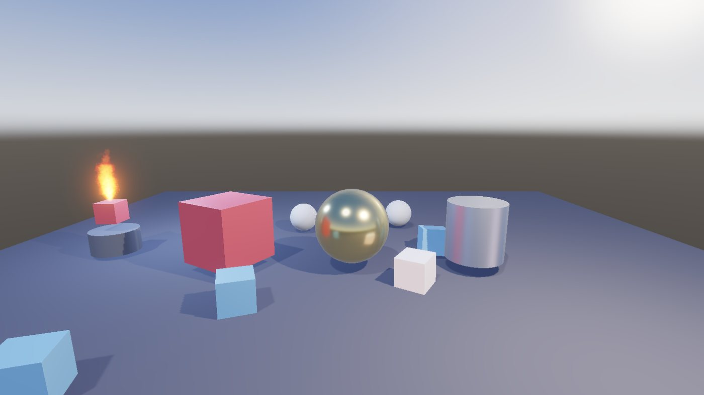
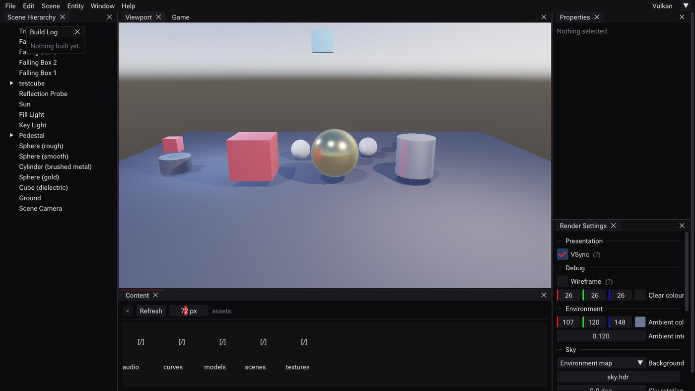
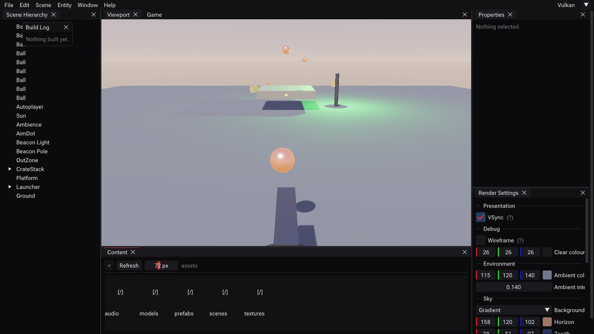
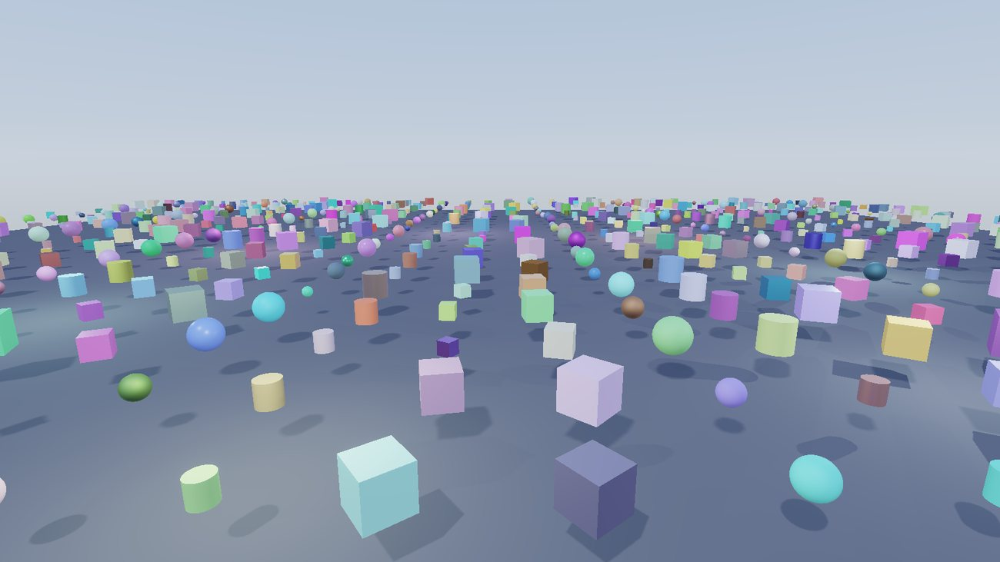
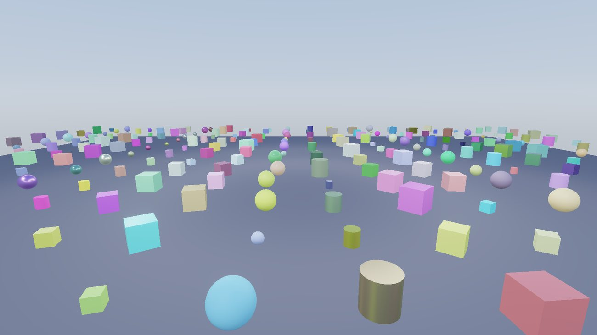
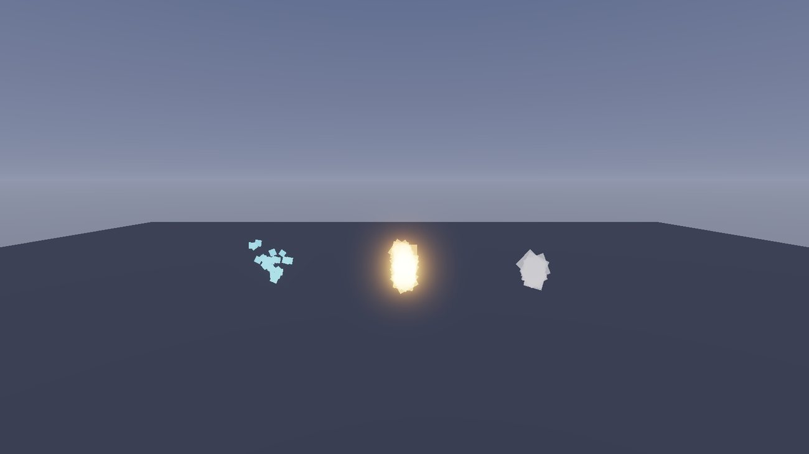
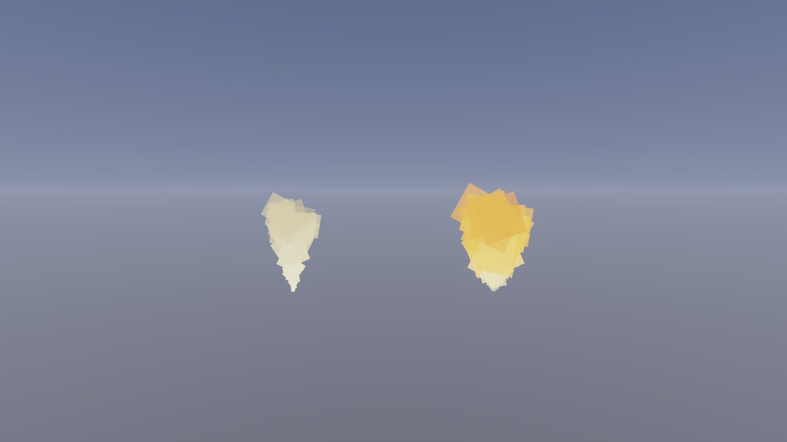
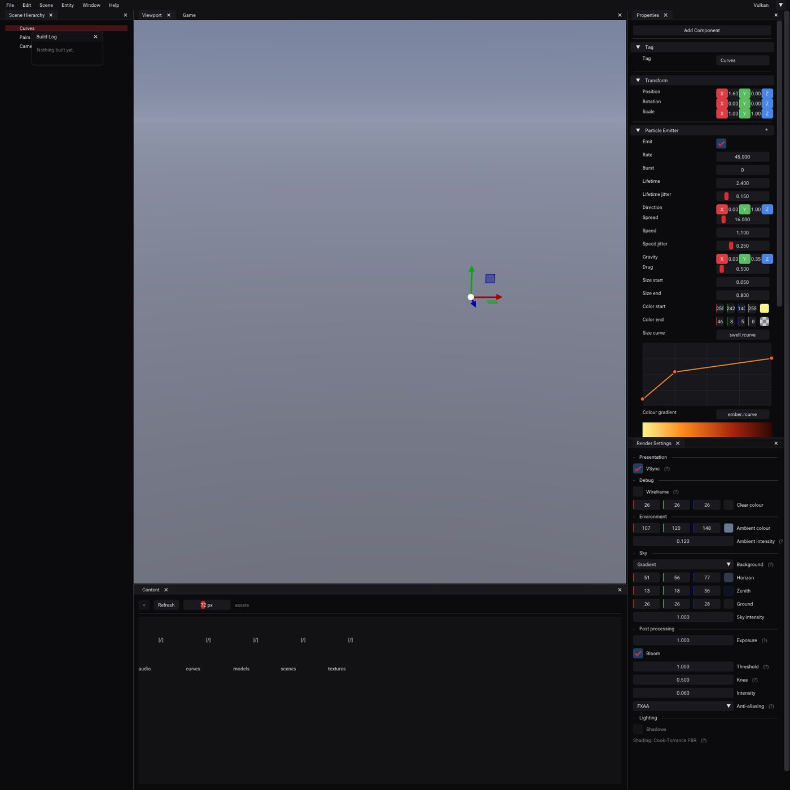
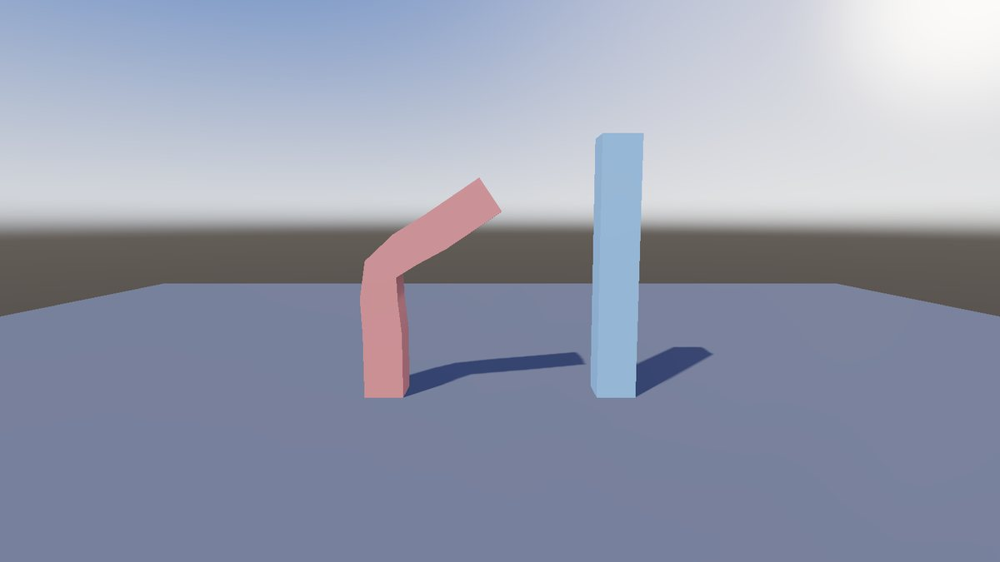
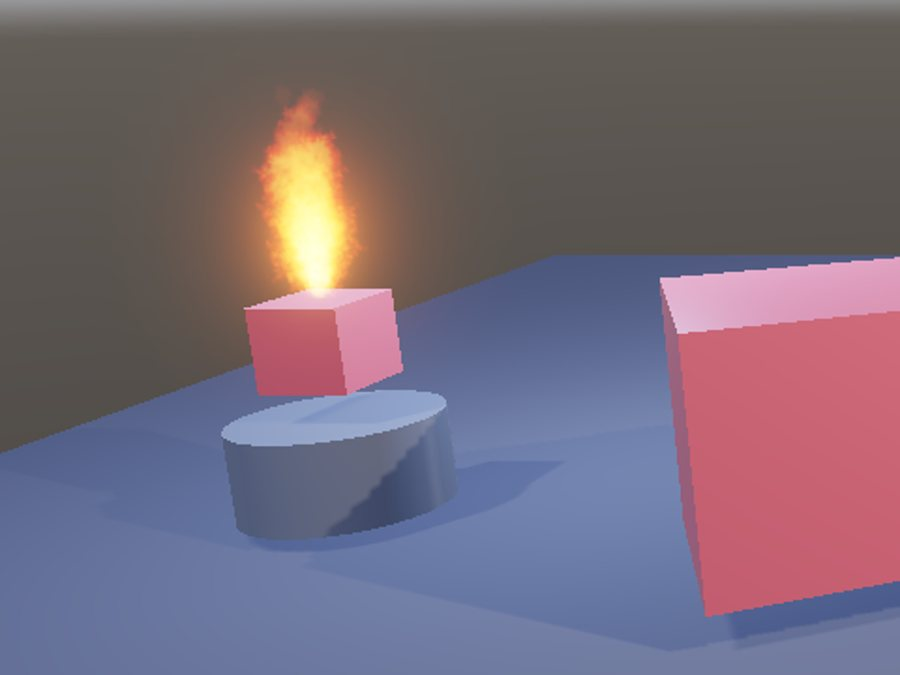

A Windows game engine with two rendering backends, a scene editor, two scripting languages and a shipped game. This document explains what it is made of, how the pieces connect, what happens in a frame — and, most of all, the sequence in which a competent engineer should build these things so that each step is provable before the next one leans on it.
This is not an API reference and not a tour of a finished thing. It is an attempt to answer a harder question: if you had to build this, what would you build first, and what would you have to understand at each step to avoid painting yourself into a corner?
Somebody with real software engineering experience — comfortable in C++, comfortable with build systems, comfortable reading someone else's architecture — who has not built a renderer or an editor before. Graphics knowledge is not assumed; where a graphics concept is needed it is explained in the place it first matters, rather than in a chapter of preliminaries you would have forgotten by the time it was used.
That you want a working engine rather than a rendering demo. Those are different projects and they diverge almost immediately. A rendering demo can hard-code its scene, load its assets from a fixed path, and put its camera in a global. An engine cannot do any of those things, and the difference is not a refactor you do later — it is the reason the build order below starts where it does.
Build the thing that other things will be described in terms of, before you build the things. Identity before serialization. Serialization before the editor. Reflection before the inspector. The hardware abstraction before the renderer. The render graph before the passes. Every one of those pairs is cheap in that order and brutally expensive in the other, and the expense is not the code — it is that the second one has to be right in a hundred call sites you have already written.
The corollary is that the most valuable early work looks the least impressive. Weeks where the screen shows nothing new are the weeks that decide whether the project has a ceiling. This document tries to make those weeks legible.
Every snippet is taken verbatim from the engine, including its comments. The comments are load-bearing: in this codebase a comment usually records why a thing is not the obvious thing, and most of them exist because the obvious thing was tried first and failed in a way that took days to find. Where that is the case, the failure is described too.

RageV is a general-purpose 3D engine with an editor, targeting Windows. It renders through either Vulkan 1.3 or OpenGL 4.6, chosen at startup, from one set of engine code and one set of shaders. It has physically-based shading with image-based lighting, cascaded and omnidirectional shadows, real-time reflection probes, clustered forward lighting with no light count limit, frustum culling, instanced batching, skeletal animation, a CPU and GPU particle system, HDR post-processing, rigid-body physics, positional audio, and scripting in both C++ and C# with live reload in each.
It ships games: a project is a folder with its own assets, scenes, scripts and game module, and the editor can package one into a standalone folder that runs without the editor present.
| Dimension | Figure | Note |
|---|---|---|
| Rendering backends | 2 | Vulkan 1.3 (dynamic rendering, no VkRenderPass) and OpenGL 4.6 |
| Scripting languages | 2 | C++ game module DLL; C# via CoreCLR, both with hot reload |
| Automated checks | 888 | Run against both backends on every change |
| Frame, sample scene | 0.80 ms Vulkan / 0.97 ms OpenGL | Release, 1600×900, vsync off |
| Frame, 1000 meshes | 1.88 ms Vulkan / 1.59 ms OpenGL | Instanced batching; OpenGL wins here, and that is discussed |
| Frame, 256 local lights | 3.15 ms Vulkan / 3.48 ms OpenGL | Clustered; 5.56 / 7.03 ms unclustered |
The engine is a DLL. Two executables link it: RageVEditor, which has panels, gizmos, an inspector and play-in-editor; and RageVRuntime, which opens a project and plays it. They share the entire frame-building path and differ only in where the finished image is delivered — an imported viewport texture for the editor, the backbuffer for the runtime. Keeping that difference to one variable is what stops the two drifting into two renderers.

Everything in this chapter is standard, and none of it is hard. It is collected here because engine code assumes all of it silently, and reading a renderer without it is like reading a database without knowing what an index is — the code parses, and the reasons do not.
You know what a vector is. What matters is that the two multiplication operations each answer one specific question, and essentially every use in a renderer is one of those two questions.
The dot product answers "how much do these two directions agree?" For unit vectors a·b = cos θ: it is 1 when they point the same way, 0 when perpendicular, negative when opposed.
That single fact is doing the work in: diffuse lighting (a surface facing the light receives light in proportion to n·l — the same energy spread over a larger area at a glancing angle); backface culling (is the triangle's normal pointing away from the camera?); depth sorting (a point's distance along the view direction is (p − eye)·forward, which is what the particle renderer sorts by); and frustum tests (the signed distance from a point to a plane is a dot product).
The cross product answers "give me a direction perpendicular to both." Its main use in this engine is not geometry but building coordinate frames: given one axis, you need two more at right angles to it, and two cross products get you there. The camera's view matrix is built this way, and so is the cone the particle emitter spawns into:
// An orthonormal frame around the axis. The reference axis just has to not
// be parallel; Y fails only when the axis is Y.
const Vec3 reference = std::fabs(axis.y) < 0.99f ? Vec3(0.0f, 1.0f, 0.0f)
: Vec3(1.0f, 0.0f, 0.0f);
const Vec3 tangent = Math::Normalize(Math::Cross(reference, axis));
const Vec3 bitangent = Math::Cross(axis, tangent);Note the guard. The cross product of two parallel vectors is the zero vector, which normalises to NaN and produces particles at infinity. Any time you build a frame from a single direction you need a fallback reference axis, and this is the idiom.
A 3×3 matrix can rotate, scale and shear, but it cannot translate: every such matrix maps the origin to the origin. Since moving things is rather central to a game engine, we need something more.
The trick — homogeneous coordinates — is to add a fourth component w and work in 4D. A 3D point (x, y, z) becomes (x, y, z, 1) and a 3D direction becomes (x, y, z, 0). Now the fourth column of a 4×4 matrix can hold a translation, and it is multiplied by w:
| 1 | 0 | 0 | tx |
| 0 | 1 | 0 | ty |
| 0 | 0 | 1 | tz |
| 0 | 0 | 0 | 1 |
| x |
| y |
| z |
| w |
| x + w tx |
| y + w ty |
| z + w tz |
| w |
This is not notation, it is a correctness rule you will use constantly. Transform a position with w = 1 and a direction with w = 0. Get it wrong and a normal or a velocity picks up the object's translation, which typically looks like geometry stretching toward the world origin. You can see the rule applied in the particle emitter, where the cone axis is a direction and the spawn point is a position:
// A direction: w = 0, so the emitter's position does not leak into it.
const Vec3 axis = local ? axisAuthored
: Math::Normalize(Vec3(world * Vec4(axisAuthored, 0.0f)));
// A position: the translation column of the matrix *is* the answer.
const Vec3 origin = local ? Vec3(0.0f) : Vec3(world[3]);Composition is multiplication, and it does not commute. Rotating then translating is not the same as translating then rotating. The engine builds each entity's local matrix in the conventional scale → rotate → translate order:
Mat4 GetLocalTransform() const
{
Mat4 rotation = Math::ToMat4(Math::FromEuler(Rotation));
return Math::Translate(Mat4(1.0f), Position) *
rotation *
Math::Scale(Mat4(1.0f), Scale);
}Read right to left, as the vector experiences it: scale the object about its own origin, then rotate it about its own origin, then move it. Any other order produces the thing every beginner sees once — an object that orbits the world origin when you scale it, or whose rotation is skewed by its scale.
A vertex makes the same journey every frame, through five coordinate systems. Almost every rendering bug is a value being used in the wrong one of these.
model space the mesh as the artist made it, origin at its own centre
| × model matrix (this object's world transform)
world space everything in one shared frame; lights live here
| × view matrix (the inverse of the camera's transform)
view space camera at the origin, looking down −Z
| × projection matrix (applies the lens)
clip space 4D, and w now holds the view distance
| ÷ w ← the perspective divide, done by hardware
NDC x,y in [−1,1], z in [0,1]; everything outside is clipped
| viewport transform (also hardware)
screen space pixelsTwo observations that matter more than the diagram:
Start from similar triangles. A point at view-space depth d (distance in front of the camera) and height y projects onto a screen plane at height y/d, scaled by how wide the lens is. With a vertical field of view fov, the half-height of the visible area at distance d is d·tan(fov/2), so:
The division by d is the hardware's job, so the matrix's task is to put d into w and pre-scale x and y by the cotangent terms. In a right-handed view space the camera looks down −Z, so d = −z, which is where the −1 comes from:
Mat4 Perspective(float verticalFovRadians, float aspect,
float nearPlane, float farPlane)
{
// Right-handed, depth in [0, 1]. The [-1, 1] form in most textbooks
// differs in [2].z and [3].z, and against a Vulkan-style clip volume it
// throws away half the depth range while still producing a picture.
const float tanHalfFov = std::tan(verticalFovRadians * 0.5f);
Mat4 result(0.0f);
result[0].x = 1.0f / (aspect * tanHalfFov); // x scale
result[1].y = 1.0f / tanHalfFov; // y scale
result[2].z = farPlane / (nearPlane - farPlane); // z remap
result[2].w = -1.0f; // w := -z == d
result[3].z = -(farPlane * nearPlane) / (farPlane - nearPlane);
return result;
}result[2].w = -1 is the entire trick: it copies −z into
w. The two z entries then remap depth into the range the hardware
wants.
Depth ranges differ between APIs, and this is a real portability issue. OpenGL's traditional clip volume has z in [−1, 1]; Vulkan uses [0, 1]. Using the textbook [−1, 1] matrix against a [0, 1] volume throws away half your depth precision while still producing a plausible picture. This engine uses [0, 1] for both and tells OpenGL to match with
glClipControl(GL_LOWER_LEFT, GL_ZERO_TO_ONE). Forget that call and every shadow comparison passes, and the scene renders uniformly lit.
Work out what the matrix above does to depth. With d = −z:
That is a hyperbola in d, not a line. The consequence is worth seeing numerically, with this engine's usual near plane of 0.01 and far of 1000:
| View distance d | zndc | Share of the buffer used so far |
|---|---|---|
| 0.01 (near plane) | 0.000000 | — |
| 0.1 | 0.900901 | 90% of the range in the first 0.1 units |
| 1 | 0.990010 | 99% |
| 2 | 0.995010 | 99.5% |
| 20 | 0.999510 | 99.95% |
| 200 | 0.999960 | 99.996% |
| 1000 (far plane) | 1.000000 | 100% |
Two practical consequences follow, and both have bitten this engine.
Precision. Almost the entire buffer is spent on the first fraction of the range, so distant surfaces get very few distinguishable depth values and start to z-fight. The fix is not more bits, it is a larger near plane: the ratio f/n is what governs precision, so moving the near plane from 0.01 to 0.1 helps enormously and moving the far plane rarely helps at all.
Depth is not a distance and must never be used as one. This is precisely the
bug described in §6.8: a published weighting formula used gl_FragCoord.z as
though it varied usefully with distance. Look at the table — between 2 and 200 units it
varies by 0.00005. The formula was numerically dead and the picture looked plausible
anyway.
There is a clean way out, and it falls out of §2.4. Since w holds the view distance, and the hardware interpolates 1/w linearly across a triangle (which is what makes perspective-correct texturing work), the fragment shader is handed that reciprocal for free:
float d = 1.0 / gl_FragCoord.w; → linear view distance, in world units
Euler angles are three numbers — yaw, pitch, roll — applied in some fixed order. They are what a human wants to type, and they are what the inspector shows. They have two failings: the order is a convention you must state, and at certain orientations two of the three axes align and you lose a degree of freedom (gimbal lock).
Quaternions are four numbers encoding an axis and an angle in a form that composes by multiplication, never gimbal-locks, and — crucially for animation — interpolates correctly. Interpolating Euler angles between two orientations swings through nonsense; spherical interpolation between quaternions takes the shortest arc at constant angular speed.
The engine's split follows from that: components store Euler angles, because
they are authored by a person and serialized to a text file a person may edit;
composition and animation use quaternions, converted at the boundary, as
GetLocalTransform above shows. Store what humans edit, compute in what maths
prefers, convert in one place.
A surface normal is perpendicular to the surface, and perpendicularity does not survive non-uniform scaling. Squash a sphere along Y and the normals of a naively transformed mesh no longer point away from the surface — lighting goes subtly, and then obviously, wrong.
The related engine-level version of the same idea: a particle emitter in local space scales its particles by the longest basis axis of its transform rather than by each axis separately, because a particle is a round thing and a non-uniform scale has no single correct answer for it.
This is the topic that produces the most "why does it look washed out" hours, and the rule is short: light adds linearly, but images are not stored linearly.
Displays and image files use roughly a γ ≈ 2.2 curve (sRGB), which spends more of its 8 bits on darks, where the eye is more sensitive. Physical light does not work that way: two lamps are exactly twice one lamp. So the pipeline must be:
_SRGB. This is
why the engine loads sprites and albedo maps as sRGB and data maps
(roughness, normals, masks) as linear: a normal map is not a picture and decoding it
would corrupt it.Hence a load-bearing invariant of the shading code: the PBR shader outputs linear HDR only. Any pass that applies a tone curve early makes every later pass wrong, and the error compounds silently because each individual image still looks like an image.
All of shading approximates one integral: the light leaving a point toward the eye is the sum, over every incoming direction, of light arriving times the fraction of it the surface sends toward the eye.
Note the n·l from §2.1 sitting inside it. "Physically based" means choosing an fr that conserves energy and is derived from a model of the surface rather than from artistic knobs. This engine uses Cook-Torrance, whose specular term is:
The three terms model a surface as a field of microscopic mirrors:
Metallic/roughness is the artist-facing parameterisation of that. Metals have
no diffuse component and tint their reflection with their own colour; dielectrics have a
diffuse colour and a colourless ~4% reflection. Rather than expose those as separate
knobs, one Metallic value blends between the two behaviours, and
Roughness drives D.
The integral above has to be evaluated against the whole environment, not just a few point lights, and you cannot do that per pixel per frame. The standard split-sum approximation factors it into parts that can be precomputed, and this is exactly why the engine builds three artefacts from one environment map (§7.6):
Blending a translucent fragment over what is already there is the over operator:
Apply it twice, in the two possible orders, and the results differ — the operator is not commutative. That single fact is the whole difficulty of transparency. Opaque geometry escapes it because the depth test discards all but the nearest fragment, so order stops mattering; translucent geometry has no such escape and must either be sorted or use a formulation that does not care.
Additive blending is the trivial escape: C = Cs + Cd is commutative because addition is. That is why fire and sparks are cheap and always correct, and why anything that reads as matter rather than light is not.
Weighted-blended OIT (§6.8, §7.8) takes the other route — two accumulators that are each order-independent by construction:
A sum and a product: neither cares about order. Now look at what happens if every
wi is the same constant k. It factors out of both the
numerator and the denominator of accum.rgb / accum.a and cancels
exactly — the weighting silently becomes a plain average. That is not a hypothetical;
it is the bug §7.8 describes, and this equation is why replacing the weight with the
literal 1.0 produced a pixel-identical image.
The visible region is a truncated pyramid bounded by six planes. Those planes can be extracted directly from the combined view-projection matrix by adding and subtracting its rows — a point is inside the frustum exactly when its clip coordinates satisfy −w ≤ x,y ≤ w and 0 ≤ z ≤ w, and rearranging those inequalities gives the plane equations.
Testing a box against a plane looks like it needs eight corner tests. It does not. For a box with centre c and half-extents e, the projection of the box onto the plane normal has radius:
The absolute values are the entire trick, and the same trick reappears when a rotated
box needs a world-space bounding box: taking the absolute value of the transform's basis
rows gives a box that contains the rotated one. The engine's TransformBounds
does exactly this, which is why a rotated particle quad still gets a correct bound.
A skinned vertex is attached to several bones with weights summing to 1. Each bone contributes the vertex transformed out of bind pose and into the bone's current pose:
The inverse bind matrix is the piece newcomers omit or misplace, and its meaning is simple: it moves the vertex from model space into the bone's local space as the mesh was authored, so that the bone's current transform then means "relative to where I started".
That gives a beautiful test, and it is the one the engine uses. At the bind pose, Mi = Bi, so every product must be the identity. One assertion — every bone's skinning matrix is the identity at bind pose — simultaneously catches wrong inverse binds, wrong multiplication order, and matrices computed in the wrong space.
Physics must advance in equal steps or it is not reproducible: a heavier frame would mean a larger step, a larger integration error, and a different outcome. But frames do not arrive at equal intervals. The standard resolution is an accumulator:
accumulator += min(frameTime, 0.25) // clamped, so a stall is forgiven
while accumulator >= dt: // zero or more times
simulate(dt)
accumulator -= dt
alpha = accumulator / dt // in [0, 1): how far into the next stepThe clamp matters: without it, a two-second stall would try to simulate two seconds of physics in one frame, taking even longer, and the loop never recovers — the "spiral of death". Forgiving the debt is the standard, correct choice.
alpha is the interesting part. At 240 Hz with a 60 Hz simulation, three frames in four run zero steps. Rendering the simulation state directly would show the same positions for four frames and then jump. Instead the renderer blends the previous and current simulation states:
This is why Application::GetInterpolationAlpha() exists and why physics
transform sync happens per frame rather than per step — and why a script that
moves a camera on the fixed step fights the interpolation rather than benefiting from
it (§6.1).
You cannot design an abstraction over Vulkan and OpenGL without knowing what each is abstracting. This chapter is the mental model, and it ends with one feature followed all the way down through both.
A GPU is a machine for running the same small program over a very large number of independent items. A draw call feeds it in this shape:
vertex buffer -> [vertex shader] one invocation per vertex; outputs clip-space position
|
[primitive assembly + clipping]
|
[rasteriser] fixed function: which pixels does this triangle cover?
| interpolates the vertex outputs across them
[fragment shader] one invocation per covered pixel; outputs colour
|
[depth test, blend] fixed function
v
render targetThree properties of this machine explain most API design decisions:
OpenGL models the GPU as one enormous global object with hundreds of settings. You mutate it with calls, then say "draw", and the draw uses whatever state happens to be set. There is no handle for "the pipeline" — the pipeline is the current state.
// OpenGL: bind, mutate, draw. The object being edited is whatever was
// bound most recently, which is why order-of-calls is load-bearing.
glBindFramebuffer(GL_FRAMEBUFFER, fbo);
glDrawBuffers(2, buffers); // which attachments outputs go to
glEnable(GL_BLEND);
glBlendFunci(0, GL_ONE, GL_ONE); // per-attachment blend
glUseProgram(program);
glBindVertexArray(vao);
glDrawElements(GL_TRIANGLES, count, GL_UNSIGNED_INT, nullptr);The driver handles memory allocation, residency and synchronisation for you. That is genuinely convenient and it is also the problem: those decisions are made by heuristics you cannot see, on a thread you do not control, and when they are wrong you have no lever. The state machine also has a specific failure mode worth naming, because it caused a real bug here:
Global state persists into whatever runs next.
glDrawBuffersis framebuffer state, not draw state, so a pass that selected a subset of attachments leaves the next pass writing into that selection. The engine now sets it unconditionally on every pass. A related trap: with a subset selected,glClearBufferfvindexes into the draw-buffer list, not the framebuffer — selecting attachments 1 and 2 means clearing indices 0 and 1.
Vulkan removes the driver's judgement and hands you the decisions. There is far more code, and in exchange nothing is guessed on your behalf. The concepts you must know:
| Concept | What it is, and why it exists |
|---|---|
| Physical / logical device | The GPU, and your connection to it. You query features (§3.5 shows why) and enable only what you use. |
| Queue | Where work is submitted. Work is a list you build, not a series of calls that execute. |
| Command buffer | A recorded list of GPU commands. Recording is CPU work; submission is when the GPU sees it. This is the single biggest departure from OpenGL. |
| Memory + buffers/images | You allocate memory and bind resources to it, choosing device-local (fast for the GPU) or host-visible (the CPU can write it). Getting this wrong is a performance cliff, not an error — see §7.9. |
| Descriptor set | A pre-baked bundle saying "this buffer is binding 0, that texture is binding 1". Replaces OpenGL's bind-before-draw with bind-a-set-of-bindings. |
| Pipeline | An immutable object baking shaders, blend state, depth state and vertex layout together. Created up front so the driver compiles once instead of guessing at draw time. |
| Render pass / dynamic rendering | Declares the attachments being drawn into. Vulkan 1.3's dynamic rendering lets you declare them inline instead of building objects ahead of time — this engine uses it exclusively, which is what makes §6.3's per-pass attachment subsets natural. |
| Fence / semaphore / barrier | CPU waits for GPU; GPU waits for GPU; and "this memory was written by X and will be read by Y". Nothing is implicit. |
| Swapchain | The images you present to. Owned by the presentation engine, which is a separate thing from the queues — a distinction that causes a specific crash, below. |
The mental shift is from calls that do things to lists that are submitted. Most Vulkan bugs are lifetime bugs: something was destroyed or rewritten while a submitted list still referred to it, and the symptom appears frames later. This is the origin of the frames-in-flight discipline in §7.2, and of an invariant that reads oddly until you know the model:
A swapchain is retired, not destroyed and replaced. Pass the old handle as
oldSwapchainand destroy it only after the new one exists —vkDeviceWaitIdlewaits for the queues, and the presentation engine is not a queue. This crashed on unchecking VSync.
| Idea | OpenGL | Vulkan |
|---|---|---|
| Shader program | glCreateProgram, GLSL compiled by the driver | SPIR-V module, compiled offline or at load |
| Draw state | Whatever is currently set | An immutable pipeline object |
| Binding resources | glBindTextureUnit, glBindBufferBase | Descriptor sets, bound as a group |
| Render target | FBO + glDrawBuffers | Dynamic rendering attachment list |
| Uploading | glBufferSubData — driver decides how | Staging buffer + explicit copy + barrier |
| Synchronisation | Implicit; glMemoryBarrier for image/SSBO writes | Explicit barriers, semaphores and fences |
| Image origin | Bottom-left | Top-left — see §7.7, this one is a menace |
Take weighted-blended transparency (the maths is §2.10). It is a good worked example because it touches every layer: shaders, pipeline state, render targets, per-attachment blending, a device feature, and a resolve pass. Here is the whole descent, from what the engine asks for to what each API does.
Two extra colour attachments alongside the scene's HDR colour, sharing its depth buffer so particles depth-test against solid geometry; particles drawn once, writing two outputs with different blend equations per attachment (accumulation adds, revealage multiplies); and a fullscreen pass that reads both and composites.
// Attachment 1: the running sum of premultiplied colour, weighted by depth.
layout(location = 0) out vec4 o_Accumulate;
// Attachment 2: how much background is still showing.
layout(location = 1) out float o_Revealage;
// NOT gl_FragCoord.z -- see 2.5. w holds the view distance.
float d = 1.0 / max(gl_FragCoord.w, 1e-6);
float weight = color.a * clamp(kUnitWeightDistance / max(d, 1e-3), 1e-2, 3e3);
o_Accumulate = vec4(color.rgb * color.a, color.a) * weight;
o_Revealage = color.a; // blend equation dst *= (1 - src) makes this a productNote that location here means "the nth attachment this pass
bound", not "attachment n of the target". That indirection is the source of
two of the traps below.
The engine asks in API-neutral terms: a graphics pipeline whose colour formats are the two attachment formats, with per-attachment blend presets.
GraphicsPipelineDesc desc;
desc.ColorFormats = { Format::R16G16B16A16_SFLOAT, Format::R8_UNORM };
desc.BlendPerAttachment = { BlendPreset::WeightedAccumulate, // ONE, ONE
BlendPreset::WeightedRevealage }; // ZERO, ONE_MINUS_SRC
desc.DepthStencil.DepthTestEnable = true; // against the scene's depth
desc.DepthStencil.DepthWriteEnable = false; // particles do not occlude each otherThe blend state is baked into the immutable pipeline object at creation, one
VkPipelineColorBlendAttachmentState per attachment. And here the API
imposes something OpenGL does not:
std::vector<VkPipelineColorBlendAttachmentState> blendAttachments(
std::max<size_t>(1, m_Desc.ColorFormats.size()));
// Attachments may only differ from one another where the device allows it.
// Without independentBlend, Vulkan requires every attachment to match the
// first, so honouring the request would be a validation error rather than
// a wrong picture.
const bool perAttachment = !m_Desc.BlendPerAttachment.empty()
&& m_Device.IndependentBlendSupported();independentBlend is an optional device feature. It must be queried
and enabled at device creation, and if it is missing the engine falls back to attachment
zero's preset and warns, naming the pipeline — a wrong picture rather than a crash. This
is the Vulkan pattern in miniature: capabilities are asked for, not assumed, and the
validation layer tells you immediately when you assumed.
At draw time the pass declares its attachments inline (dynamic rendering), which is what makes binding attachments 1 and 2 of a three-attachment target a natural thing to express rather than a new framebuffer object.
There is no pipeline object, so the same information is applied as state at bind
time: glEnablei/glBlendFunci per draw buffer. No feature query
is needed — indexed blending is core in 4.x. But the framebuffer must be told which
attachments the outputs map to, and that is persistent state:
// glDrawBuffers decides which attachments the fragment shader's outputs
// land in, and the clears below address them by index into *this* list
// rather than into the framebuffer -- selecting attachments 1 and 2 means
// the shader's location 0 writes attachment 1.
for (const ColorBinding& binding : info.ColorAttachments)
buffers.push_back(GL_COLOR_ATTACHMENT0 + binding.Index);
if (!buffers.empty())
glDrawBuffers((GLsizei)buffers.size(), buffers.data());A fullscreen triangle samples both accumulators and composites (§2.10). It is one pass, and one is an odd number — which is exactly the condition under which the image-origin difference in §3.4 stops cancelling out. Vulkan composited every weighted particle upside down for an entire release, because flipped smoke still looks like smoke. §7.7 has the full account; the point here is that the disagreement between the two APIs was not in the feature, it was in a convention two layers below it.
This is the part worth arguing with. Everything else in the document describes a state; this describes a sequence, and the sequence is the transferable knowledge.
Most engine tutorials are organised by subsystem: here is a renderer, here is a physics integration, here is an editor. That organisation is fine for explaining a subsystem and actively misleading as a plan, because it hides the dependencies that actually bite. Those are rarely compile-time dependencies. They are format and identity dependencies, and they bite when you try to change something after a hundred files already contain it.
Two rules produced the order below.
An engine is a program for describing scenes. Rendering is one consumer of that description; serialization, the editor, the undo stack, prefabs, the network layer you have not written, and every script are the others. Build the description first, make it persist losslessly, and only then draw it. A renderer built first will invent its own notion of a scene, and every later system will be a translation layer.
There are exactly two places where retrofitting an abstraction costs more than writing it up front: the graphics API boundary and the frame's pass structure. Both are touched by every rendering feature you will ever add. Write the RHI before the second backend is a thought, and write the render graph before the third pass. Anywhere else, abstract late.
Deliverable: a scene you can build in an editor, save, load, and get back byte-identical, with undo.
Concretely, in this order:
Why not draw first? Because the moment you can draw, you will want to draw more, and everything you add will be described in whatever ad-hoc way the renderer already understands. The scene model is the vocabulary. Fix the vocabulary first.
Deliverable: a scene file that references a mesh without containing it.
Assets get the same treatment entities did: a 64-bit AssetHandle, a
registry that maps handles to paths, and a .meta sidecar beside each source
file that records the handle so it survives a rename. Then a real importer — glTF, via
cgltf — and meshes, materials and textures as addressable assets rather than things a
loader hands you.
The ordering point: import comes after handles. If you write the importer first it will return objects, and you will spend the next phase converting object returns into handle returns everywhere.
Deliverable: a scene that runs, and reverts perfectly when you stop.
"Jump" survives rebinding; one written against a key code does not, and
by the time you notice, fifty scripts have key codes in them.Deliverable: the picture in Figure 1, on two backends, from one set of code.
This is the largest phase and the one most likely to be attempted in the wrong order. The correct order is counter-intuitive because it front-loads two pieces of pure plumbing that render nothing new.
The measurement discipline starts here. Two of the optimisations in this phase — frustum culling and instanced batching — cut draw calls dramatically and produced no frame-time improvement whatsoever. Culling took 144 draws to 60; instancing took 3238 to 854; the clock did not move either time. A draw count is not a frame time. See §10.
Deliverable: a folder you can send someone that runs without the editor.
Doing this before the engine is "finished" is deliberate. Packaging is where you discover that your asset paths were relative to the editor's working directory, that your shaders were loaded from the source tree, and that the runtime renders a blank window because a pass clears the backbuffer after the scene is drawn — a bug with a perfectly healthy draw-call count, which is why the RHI has a screenshot capture (§10).
Deliverable: the same game logic, in C++ or C#, either reloadable without restarting.
C# is hosted through CoreCLR, with the managed assembly loaded from bytes
into a collectible AssemblyLoadContext that is retired and replaced on every
build. The unload is verified with a weak reference; a context that will not die is
reported rather than ignored, because a leaked context means the old code is still
running and the symptom is "my change did nothing".

Building a small, complete, shippable game before adding more engine features is the highest-value scheduling decision in the whole project. It found six real engine holes in one session, every one of which was invisible from inside the engine:
AddBody
existed and had no callers. The first ball fired hung in the air.Note the pattern: none of these were bugs in a feature. They were bugs in the seams between features, and only an application that crosses the seams finds them. A test suite written by the same person who wrote the feature tends to test the feature.
The game produced a ranked list of what actually hurt, which is a far better backlog than a list of what sounds impressive. In order: no text or UI (the game communicated entirely through a light and four sounds), no per-frame script hook (camera smoothing and recoil had nowhere to live), no particles, and some small API gaps in audio.
Particles were built first at the user's direction, and are covered in @@§9.8 and @@§9.9. Text and UI, and the per-frame hook, remain open.
Project (.rvproject: asset root, start scene, fixed Hz)
|
Application (fixed-step loop, InputMap, AssetRegistry/Manager, AudioEngine)
|
Layers -> EditorLayer | RuntimeLayer
|
Scene (EnTT) -- PhysicsWorld (Jolt) ScriptRegistry
| |
| contact events
| v
| scripts --> AudioEngine (miniaudio)
|
RenderGraph <- BuildFrame -> PostProcess
|
Renderer2D / Renderer3D / DebugRenderer
|
RHI -> Platform/Vulkan | Platform/OpenGLDependency runs strictly downward. The Scene knows nothing about the
renderer; the renderer reads the scene and never writes it. The RHI knows nothing about
scenes, meshes or materials — it knows buffers, textures and pipelines. Two consequences
worth stating because they are what the layering buys:
The engine builds as RageV.dll. The editor, the runtime, the test tools
and each project's game module link against it. This is what makes per-project C++
scripting possible without an engine rebuild, and it imposes two constraints that are
easy to violate silently:
Static data read through an inline accessor does not cross a module boundary. The consumer links its own copy. Anything that must be a singleton across the boundary needs an exported out-of-line accessor.
A translation unit containing only static registrars is dropped from a static library. It no longer bites the engine, which is linked from object files, but it is why built-in scripts are still registered by an explicit function call — and it would bite again the moment anything moved back into a
.lib.
A related trap, found late and worth generalising: a tool must not link a vendored
library the engine already links privately. The RHI smoke-test tool linked GLFW a
second time and called glfwInit itself, so the executable and the DLL each
held their own GLFW globals. The window was real and the engine's copy had never heard
of it, so Vulkan reported a null HWND and OpenGL reported that it could not
load GL functions — one cause, two symptoms that look completely unrelated.
Three places in the engine define something once and generate everything else from it. Each replaced two or three hand-maintained copies that had already drifted at least once. This is the single most reusable idea in the codebase.
Each component is described once — its name, its fields, their types and editor hints:
// Order is the serialization order and the inspector order, so it is
// fixed here rather than emerging from a hash map.
ComponentDesc desc;
desc.Name = "ParticleEmitterComponent";
desc.DisplayName = "Particle Emitter";
desc.Fields = {
Field<&ParticleEmitterComponent::Rate>("Rate", Drag(1.0f, 0.0f, 10000.0f)),
Field<&ParticleEmitterComponent::ColorStart>("ColorStart", Color()),
Field<&ParticleEmitterComponent::SizeCurve>("SizeCurve",
Named("Size curve", AssetRef(AssetType::Curve, "..."))),
Field<&ParticleEmitterComponent::Blend>("Blend", Enum(kParticleBlendNames)),
};
Bind<ParticleEmitterComponent>(desc);From that one description the engine derives the scene file format, the inspector UI, the undo system's field-edit commands, and the C# component bridge — C# reaches components by registry name with values as text, so a component gaining a field is visible from C# the moment it exists. Nothing here can go stale, because there is nowhere for it to go stale to.
The cost of a type-erased system is that type errors become runtime errors. One of them was worth converting back into a compile error:
else if constexpr (std::is_enum_v<T>)
{
static_assert(sizeof(T) == sizeof(int),
"A registered enum field must be int-sized: reflection reads and "
"writes it through an int*, so a narrower underlying type is a "
"silent memory stomp. Remove the ': uint8_t' from this enum.");
return FieldType::Enum;
}An enum class : uint8_t compiled, drew correctly, and wrote three bytes
past the end of the field. It is now a build error naming the offending enum.
One interface, two implementations; discussed in @@§9.1.
One 64-bit identity per asset, one registry, one .meta sidecar. Every
reference anywhere — scene files, prefabs, components, the C# bridge — is that handle.
When particle curves were added as a new asset type, the inspector, the serializer and
the C# bridge all worked immediately, because a curve reference is an
AssetHandle and the system already knew what those were.
clamp frame time (0.25s)
InputMap::Update() once per frame
for each fixed step: zero or more
Layer::OnFixedUpdate(dt) scripts, then physics
InputMap::EndFixedStep()
alpha = accumulator / dt
BeginFrame -> Layer::OnUpdate(ts) -> ImGui -> EndFrameSimulation advances in fixed steps; rendering does not. Above 60 Hz a frame commonly
runs zero steps, which is exactly why rendering must interpolate rather than
read the simulation directly. The renderer blends the last two simulation states by
alpha.
This split has a consequence that shapes the whole scripting API: presentation
belongs on the frame, simulation belongs on the step, and every system has to pick
one deliberately. In Scene::OnUpdateRuntime — the per-frame pass — each
choice carries its reason:
// On the frame rather than the fixed step, for the same reason the audio
// positions are: an animation is presentation, and pinning it to the
// simulation rate would make it stutter at any other frame rate.
UpdateAnimators(ts);
// Per frame, not per step: this is where the blend between the last two
// simulation states is applied, and it is the frame that needs it.
if (m_Physics)
m_Physics->SyncTransforms(*this, Application::GetInterpolationAlpha());
// After the sync, so a sound on a simulated body is placed where it is
// being drawn rather than one step behind it.
UpdateWorldTransforms();
UpdateAudio();
// Presentation too: nothing collides with a particle and nothing scores
// one, so they move at whatever rate the display shows them.
Particles::System::Update(*this, ts.GetSeconds());Scripts are currently the one system still pinned to the fixed step, which is a known gap: a camera moved from a fixed-step callback updates on one frame in four at 240 Hz, against a world that interpolates on all four — differential stutter, which reads worse than no smoothing at all.
(prefilter) -> roughness levels, 36 small renders, ONCE per environment
(shadow maps) -> 4 cascades + a map per casting spot and a cube per point,
all scene renders, BEFORE the graph opens
(probe faces) -> probe cube 0..6 scene renders, BEFORE the graph opens
Scene -> SceneHDR RGBA16F, linear, no tone curve
meshes reflect the environment cube
sky after the meshes, depth-tested, no depth write
Transparent -> accum + reveal weighted-blended particles (only if used)
ResolveTransparent -> SceneHDR composites the two buffers back
Overlay -> SceneHDR colliders, preserved load, depth-tested
Bloom prefilter -> Bloom0 13-tap, Karis weighted, clamped, soft knee
Bloom down 1..4 -> Bloom1..4 13-tap, halving each time
Bloom up 4..1 -> Bloom3..0 3x3 tent, ADDITIVE, accumulates in place
Tonemap -> LDR exposure, + bloom, ACES, 1/2.2
FXAA -> Output on the tone-mapped image, not the linear oneSeveral ordering decisions here are not arbitrary and are easy to get wrong:
A pass declares what it writes and what it samples; the graph pools the targets and executes in declaration order. A pass is two lambdas — one that declares, one that draws:
graph.AddPass("Scene",
[&](RGPassBuilder& builder)
{
// Attachment 0 only: every pipeline that draws the scene declares
// one colour format, and a pass binding three would require all
// of them to declare three.
builder.WriteAttachments(sceneHDR, { { 0, desc.ClearColor } });
builder.SetClearColor(desc.ClearColor);
},
[draw = desc.DrawScene](RGPassContext& context)
{
if (draw)
draw(context);
});Targets are pooled by shape, so eleven passes use seven targets. The graph also refuses malformed frames at compile time rather than producing an undefined picture: a pass binding an attachment its target does not have, or a target created and never written, are both errors.
The payoff is concrete. Weighted-blended transparency needed a target with three colour attachments over one shared depth image, with the scene pass binding attachment 0 and the transparent pass binding 1 and 2 — a structural change to the frame that amounted to two new graph capabilities and two pass declarations, and touched no existing pass.
Vulkan and OpenGL disagree about almost everything that matters: who owns synchronisation, whether resources are bound or described, how memory is allocated, and which way up an image is stored. An abstraction over both is an exercise in choosing which disagreements to hide and which to expose.
The nouns, not the verbs of one API. RHIDevice, RHIBuffer,
RHITexture, RHIPipeline, RHIShader,
RHIResourceSet, RHISampler, RHICommandList. These
exist in both worlds even when only one names them.
Anything whose cost differs by an order of magnitude between the two. Frames in flight is the clearest example: it is a Vulkan concept, OpenGL has no equivalent, and hiding it would have meant either paying Vulkan's synchronisation cost on OpenGL or silently writing buffers the GPU was still reading. It is exposed, and OpenGL implements it honestly — which found a real bug, see @@§9.2.
Buffer barriers are the good example. Vulkan wants an access mask and a stage; OpenGL
wants a memory-barrier bit. Neither vocabulary translates. The RHI takes a
BufferSync describing the use — "was written by compute, will be
read as an index buffer" — which both backends can implement without lying.
// Records a one-shot command list and blocks until the GPU has finished it.
// Outside the frame loop entirely: no swapchain image is acquired and
// nothing is presented.
//
// It stalls, by construction -- that is what makes it usable for work whose
// result is needed immediately, and what makes it wrong on the frame path.
virtual void ExecuteImmediate(const std::function<void(RHICommandList&)>& record) = 0;Asset upload uses it, one-off compute dispatches use it, and — the reason it earns its place — it is what lets the headless test suite exercise real GPU work without a frame loop to borrow.
The CPU records frame N+1 while the GPU executes frame N. Everything the GPU might still be reading therefore needs one copy per frame in flight, and everything destroyed needs to outlive the frame that used it. Three rules follow, all learned the hard way.
Every backend needs more than one frame in flight and a fence between them. OpenGL originally reported one and had no fence, so subsystems rewrote per-frame buffers the GPU was still reading — a static scene rendered three different images in six frames. Fixing it cost 6% and bought correctness.
A resource set holds one descriptor set per frame in flight, and commit writes only the current frame's. Committing once at creation populates one and leaves the rest never written: validation catches it on frame two, a release build renders garbage.
The third is subtler and took a purpose-built repro to find. Deletion is deferred to a
per-frame-slot queue — but entity destruction happens in the simulation phase,
before BeginFrame, so a deleter pushed there landed in the slot
BeginFrame was about to flush in the same iteration:
void Push(std::function<void()> deleter)
{
if (!DeviceAlive || PerFrame.empty()) return;
// Out-of-frame pushes are slotted by the most recently *submitted*
// frame, not the current index -- otherwise they land in the slot
// about to be flushed, behind a fence covering a frame from two
// submissions ago. Deferred by zero frames, in every process.
const uint32_t count = (uint32_t)PerFrame.size();
const uint32_t slot = InFrame ? FrameIndex : (FrameIndex + count - 1) % count;
PerFrame[slot].push_back(std::move(deleter));
}The GPU usually won the race, which is why it read as a rare runtime flake. It was proven fixed with a churn scene destroying ~180 materials a second under GPU load: 10 validation errors in 4000 frames before, zero in 12000 after.
Meshes sharing a mesh handle, material and pipeline state are drawn as one instanced call, with per-instance transforms in a storage buffer. Two things about this are worth transferring.
Identical state must be the same object, or a batch key cannot see it. Materials each created their own sampler with identical settings. The batcher compared sampler pointers, saw a difference that did not exist, and silently prevented all lit batching. Sharing one sampler dropped the frame to 60 draws and won 4.5× on OpenGL.
A batch's base instance is a push constant, never firstInstance.
Vulkan's gl_InstanceIndex includes the base offset; OpenGL's
gl_InstanceID does not. Using the API's own base instance produces a correct
picture on one backend and scrambled transforms on the other.

Shading a pixel needs to know which lights reach it. The naive answer — loop over every light in the scene, for every pixel — costs pixels × lights, and at 1600×900 with 256 lights that is 368 million lighting evaluations per frame, the overwhelming majority of which contribute nothing because the light is fifty metres away.
Three families of solution exist, and the choice constrains the rest of the renderer:
| Approach | Idea | Cost you accept |
|---|---|---|
| Forward | Loop all lights per pixel | Quadratic. Fine to about a dozen lights. |
| Deferred | Write material properties to a G-buffer, then shade once per pixel per light | Large bandwidth cost, awkward with transparency and MSAA, and every material must fit the G-buffer's fixed layout |
| Clustered forward | Divide the frustum into cells, bin lights into cells, shade forward but loop only over the cell's lights | A binning step and an indirection, and you keep forward's freedom |
This engine uses clustered forward, and the reason is the last column. Deferred would have forced a fixed material model, made the transparency work of §7.8 far harder, and spent bandwidth the engine would rather spend elsewhere. Clustered keeps forward's properties and removes its quadratic term.
The view frustum is cut into a 16 × 9 × 24 grid: 16 × 9 tiles across the screen, and 24 slices along the view axis, for 3,456 cells. Each cell holds a list of the lights whose volume of influence intersects it. Binning happens on the CPU once per frame; the shader looks up one cell.
Two details in that sentence are load-bearing.
Tiles are cut in normalised device coordinates, not in world space, so a tile is a frustum-shaped wedge that widens with distance — which is exactly the shape a screen tile projects to.
Slices are cut along the camera's forward axis, not by distance to the camera. Using distance would make each slice boundary a sphere rather than a plane, and a light straddling a boundary would be binned inconsistently with how the shader looks it up. The shader is explicit about this:
// Distance along the camera's forward axis, which is what the slices were
// cut against -- not distance to the camera, which would make the slice
// boundaries spheres instead of planes.
float viewDepth = dot(worldPos - u_Scene.CameraPosition.xyz,
u_Scene.CameraForward.xyz);If the 24 slices were spread evenly from near to far, almost all of them would land in the distant half of the frustum, where §2.5 showed there is very little going on perceptually and where a slice is enormous. Near the camera — where cells are small and lights overlap most — you would have almost no subdivision at all.
So slices are spaced geometrically: each is a constant ratio deeper than the last, which makes them uniform in log space. Given a near distance n, a far distance f and k slices, we want slice i to begin at:
Inverting that to get a slice index from a depth gives a logarithm:
Folding the constants into a scale and a bias on the CPU turns the per-pixel work into one logarithm and one multiply-add — no search, no loop:
// The slice mapping is the inverse of the geometric series the grid was
// built with -- scale and bias arrive already folded, so this is a log and
// a multiply-add rather than a search.
float slice = 0.0;
if (viewDepth > u_Scene.ClusterDepth.x)
slice = log(viewDepth) * u_Scene.ClusterDepth.z + u_Scene.ClusterDepth.w;
uint z = uint(clamp(slice, 0.0, sliceCount - 1.0));
return (z * uint(tileCount.y) + tile.y) * uint(tileCount.x) + tile.x;The CPU's binning and the GPU's lookup are two implementations of one mapping, and they must agree exactly. Where they disagree a fragment reads a neighbouring cell's light list — which does not look like an indexing bug. It looks like lighting that snaps as the camera moves, and you will go looking in the wrong place.
One more subtlety in that function, and it is a portability point rather than a maths
one. The tile is derived from the fragment's own interpolated clip position rather than
from gl_FragCoord:
// The fragment's own normalised device coordinate, from the interpolated
// clip position. Independent of the target's size and of which corner the
// backend calls the origin, both of which gl_FragCoord would drag in.
vec2 ndc = v_ClipPos.xy / max(abs(v_ClipPos.w), 1e-6) * sign(v_ClipPos.w);
vec2 unit = clamp(ndc * 0.5 + 0.5, vec2(0.0), vec2(0.9999));
uvec2 tile = uvec2(unit * tileCount);gl_FragCoord is in pixels and measured from whichever corner the backend
calls the origin (§3.4). Using it would have made the cluster lookup depend on the render
target's size and disagree between Vulkan and OpenGL — the second of which produces a
correct picture on one backend and misplaced lighting on the other, with no error
anywhere.

Directional lights are deliberately not binned. A directional light reaches every cell, so putting it in every cell's list costs memory and iteration to express "always". They are stored separately and applied unconditionally.
Know where your optimisation does not help — and instrument it so you can see. When every light reaches the whole scene, the busiest cell holds all of them and clustering is pure overhead: measured at 5.76 → 6.62 ms, a loss. The benchmark prints "busiest cluster holds N" precisely so this is visible rather than mysterious, and the scene generator takes
--light-reach 0to construct the pathological case deliberately. An optimisation you cannot see failing is one you will defend after it stops working.
A point is in shadow if something blocks the straight line between it and the light. Testing that directly is ray tracing. The rasterisation approximation is a shadow map, and it is elegant: render the scene from the light's position storing only depth. That texture now records, for every direction the light can see, the distance to the nearest thing. To shade a point, transform it into the light's space and compare its depth against the recorded one — if the point is further away than what the light saw, something is in front of it.
Everything difficult about shadow mapping comes from that comparison being between a continuous value and a quantised one.
A shadow map texel covers an area of the surface, and stores one depth for it. On a surface tilted relative to the light, the true depth varies across that texel while the stored value does not. Half the pixels in the texel therefore test as further than the recorded depth and declare themselves shadowed — shadow acne, the characteristic stripes of a surface shadowing itself.
The obvious fix is a constant depth bias: subtract a little before comparing. It works until you find the constant that removes acne on a steep surface, notice it is large, and see that on a flat surface it has pushed the shadow away from the object casting it — peter-panning, an object floating above its own shadow. There is no constant that avoids both, because the required bias depends on the surface's slope relative to the light.
This engine uses two mechanisms instead, and neither is a depth bias:
// Two biases, because one is not enough and the reason is geometric. The
// shadow pass writes back faces, which pushes each caster's recorded depth
// behind it by its own thickness -- free, and proportional to the object.
// That does nothing for a surface nearly edge-on to the light, where one
// shadow texel spans a lot of depth, so the sample is also moved along the
// surface normal by a texel scaled by the slope. Pure depth bias is the
// option that was not taken: there is no constant that avoids both acne
// and shadows detaching from their casters.Back-face rendering costs nothing and scales itself: by recording the depth of each caster's far side, the recorded depth is already behind the lit surface by the object's own thickness. A thin object gets a small bias and a thick one a large bias, automatically.
Normal offset handles what remains. Rather than moving the depth, move the sample position along the surface normal by roughly one shadow texel — pushing the query out of the problematic texel entirely. The offset must grow with the slope, and the slope term is a small piece of trigonometry:
float NdotL = clamp(dot(N, L), 0.0, 1.0);
// tan of the angle to the light, clamped: at grazing incidence this runs
// away, and an offset larger than the geometry detaches the shadow.
float slope = sqrt(1.0 - NdotL * NdotL) / max(NdotL, 0.15);
float offset = u_Scene.CascadeTexel[cascade] * u_Scene.ShadowParams.y *
(1.0 + min(slope, 4.0));
vec4 lightSpace = u_Scene.CascadeLookup[cascade] * vec4(worldPos + N * offset, 1.0);Both clamps are necessary. As n·l → 0 the tangent goes to infinity, and an offset larger than the geometry moves the sample to somewhere unrelated — peter-panning by another route.
The comparison yields a boolean per texel, so a raw shadow edge is a hard staircase of map texels. PCF takes several neighbouring comparisons and averages the results — note, the results, not the depths; averaging depths is meaningless. The hardware helps: a depth-comparison sampler performs a 2×2 comparison and returns the filtered fraction in one fetch, so a 3×3 grid of those covers 4×4 texels for nine fetches.
// 3x3 of hardware 2x2 taps. Nine fetches is the point at which the edge
// stops looking like a staircase and starts looking like a penumbra.
float texel = u_Scene.ShadowParams.z;
float sum = 0.0;
for (int y = -1; y <= 1; ++y)
for (int x = -1; x <= 1; ++x)
sum += SampleCascade(cascade, vec3(coordinate.xy + vec2(x, y) * texel, coordinate.z));
return sum / 9.0;A directional light — the sun — has no position, so its shadow map must cover the whole visible world. Consider what that means: a 2048² map stretched over a 1 km view distance gives one texel per half metre, and the shadow of a chair is four texels across.
The observation that rescues it is that you do not need uniform resolution. Things near the camera occupy many pixels and need fine shadows; things far away occupy few and do not. So the view frustum is split by distance into four cascades, each rendered into its own map with its own tight projection. The near cascade covers a few metres at high effective resolution; the far one covers the rest.
Three consequences worth knowing before you build it:
CascadeFactor is deliberately split into a per-cascade function so the
band between two of them can ask both and interpolate.Spot lights need only one map — they have a position and a cone, which is exactly a perspective projection. Point lights need six, as a cube map, because they shine in every direction; that is why a point light casting shadows is the most expensive light type by a wide margin, and why it is opt-in per light.
glClipControl(GL_LOWER_LEFT, GL_ZERO_TO_ONE)
(§2.4). Without it the depth written is in [−1,1] while the comparison assumes [0,1],
every comparison passes, and the scene renders uniformly lit — which looks like shadows
being disabled rather than like a convention mismatch.Point and directional lights model light arriving from a handful of directions. Real environments light objects from every direction — a white wall to the left tints everything left-facing. Without this, PBR materials look like plastic in a void: technically correct and obviously wrong, and metals look worst of all, because a metal has no diffuse term and is entirely reflection. A metal with nothing to reflect is black.
Image-based lighting treats an environment map as the light source: the whole integral of §2.9, evaluated against a cube map instead of a list of lights.
That integral cannot be evaluated per pixel per frame. The split-sum approximation factors it into pieces that each depend on only one or two variables, so each can be precomputed into a lookup:
At shading time those three combine into a few texture fetches, which is the entire point of the exercise.
A static environment map cannot show the room an object is standing in. A reflection probe is an entity that renders the scene into a cube map from its own position — six scene renders — and objects near it reflect that instead of the sky. The engine picks the nearest probe whose influence radius contains the camera, falling back to the sky.
Probes may be baked (captured once; costs nothing thereafter, right for a room whose surroundings do not move) or realtime (re-captured continuously, one face per frame by default). One face per frame rather than six is a deliberate trade: six renders in one frame is a visible hitch, while one is a sixth of the cost and a sixth of a second of latency on a reflection nobody is studying closely.
Mip generation belongs in the command buffer that wrote mip 0.
GenerateMipssubmitted its own command buffer and waited, so a probe's mip chain was built from a mip 0 that had not been rendered yet — the probe's metal read black for six frames and then corrected itself. A bug that heals itself reads as a warm-up, which is why it survived; it took a per-frame luminance measurement to show a hard step at frame 7 rather than a gradual fill.
The cube-map face table is the contract between capture and sampling. Six faces means six view matrices, and the order and orientation conventions must match between the code that renders them and the code that samples them. Get one face's up-vector wrong and reflections are correct in five directions and mirrored in the sixth — which almost never points at anything you are looking at.
There is also a dependency worth internalising: IBL is derived from the sky, so it is wrong whenever the sky is. An early bug had the irradiance falling back to a sky that was never drawn, producing ambient light from an environment that did not exist. Precomputation creates these silent couplings, and the general rule is that anything derived must be invalidated by whatever it was derived from.
§2.8 established that lighting must happen in linear space with unbounded values. A display takes bounded, gamma-encoded values. Post-processing is the bridge, and it is also the only place where effects that need the whole image can happen.
Bloom is the glow around very bright things — physically, light scattering inside the eye and the lens. The implementation is a blur of the bright parts, added back. Three decisions matter.
Thresholding with a soft knee. A hard cutoff — "keep pixels above 1.0" — produces a visible edge where a gradient crosses the threshold, and makes bloom pop as brightness changes. A soft knee ramps the contribution in over a range instead.
The Karis average, which exists to kill fireflies. A single extremely bright pixel — a specular glint on a curved metal — survives downsampling and reappears as a large flickering blob, because averaging a huge value with small ones still gives a large value. Weighting each tap by 1/(1+luma) before averaging bounds any single sample's contribution. Without it, bloom flickers on exactly the content that most needs it.
Blur by resampling, not by a wide kernel. A blur wide enough to look like bloom would need an enormous kernel at full resolution. Instead the image is downsampled in five steps with a 13-tap filter, then upsampled back with a 3×3 tent filter, accumulating additively into the level above at each step. Each level contributes a different blur radius, and the sum is a wide, smooth, cheap falloff. The chain has an odd number of passes — remember that; it is about to matter.
Mapping unbounded linear values into [0,1]. Simple x/(1+x) works and looks flat; the engine uses an ACES filmic approximation, which has the gentle toe and shoulder of film and keeps saturated highlights from tearing toward white. Then exposure, then encode to gamma. This is the only place a tone curve is applied, which is what makes the invariant "the PBR shader outputs linear HDR only" enforceable.
FXAA finds edges by luminance contrast and blurs along them. It runs on the tone-mapped image rather than the linear one, and this is not arbitrary: contrast in unbounded HDR is not perceptual contrast. A linear-space difference between 40.0 and 41.0 is large numerically and invisible on screen; run edge detection there and it finds edges nobody can see while missing the ones they can.
This is the single most instructive defect in the codebase, both for what it was and for how it came back.
// A fullscreen pass reads one render target and writes another, and the two
// backends do not store a rendered image the same way round.
//
// Vulkan's first framebuffer row is the top of the image; OpenGL's is the
// bottom. The RHI hides that everywhere else by giving Vulkan a negative-
// height viewport, so geometry lands in the same place on both -- but that
// fixes where a fragment *writes*, not where a texture coordinate *reads*.
//
// An even number of passes hides it, which is why this survived: with
// anti-aliasing on, the scene goes tonemap -> FXAA and comes out the right
// way up. The bloom chain has an odd number, and its contribution was being
// added upside down -- visible only once something was bright enough to
// bleed, as blobs mirrored about the middle of the image.
local.FlipY = s_Data->Device->GetBackend() == Backend::Vulkan ? 1.0f : 0.0f;Read that carefully, because the mechanism generalises: an even number of mistakes cancels. The scene survived a whole roadmap phase because the ordinary path had two flips and the bloom path had one — and the one only became visible when the scene finally contained something bright enough to bloom.
Then it happened again, and the second time is the transferable lesson. The invariant had been written down ending "…and nothing else samples a render target." That was true when written. It stopped being true the moment the transparency resolve pass of §7.8 was written — a fullscreen pass that samples two render targets, living in the particle renderer rather than the post-processing file, so it inherited none of this. One pass is an odd number. Vulkan composited every weighted particle upside down.
A rule stated in terms of where code lives will be violated by code that lives somewhere else. The invariant is now stated in terms of behaviour: anything that samples a render target and writes another owes the flip, wherever it lives. That is a rule the resolve pass could not have slipped past.
Opaque geometry is order-independent because the depth buffer sorts it. Transparency is not, and everything else follows from that.

| Mode | How | Correct when |
|---|---|---|
Additive | Sums light; order cannot affect a sum | Always — for things that are light: fire, sparks, flashes |
Alpha | Sorted back to front | Exact, but needs a sort — impossible for a GPU-simulated pool without a readback |
WeightedBlended | Two order-independent accumulators plus a resolve | Approximate, needs no sort, and the approximation is good for dense plumes |
Weighted-blended OIT (McGuire & Bavoil) accumulates premultiplied colour weighted by a depth-dependent term into one buffer, and coverage into another; a resolve pass divides them. The technique lives or dies on that weight function, and validating it is a lesson in how to test a picture.
The weight was taken from a well-known published snippet and eyeballed once. To check it, a scene was built whose correct answer is arithmetic: three emitters at 2, 20 and 200 units, one motionless particle each, red/green/blue at alpha 0.5, every spatial quantity scaled by distance so all three subtend the same angle and land exactly concentric. Compositing 0.5 red over 0.5 green over 0.5 blue is 4:2:1 — a red-dominant pixel — and a single sorted CPU emitter produces that by construction. So the reference is not a stored image but a render that is correct by definition.
It found the weight was a constant. The published snippet uses
gl_FragCoord.z, which is non-linear: with the sample scenes' near plane of
0.01 it spans 0.995 to 1.0 across the entire world, so the depth term varied by 4% from
arm's reach to the horizon — and a 1e8 multiplier put the product 39× over
the clamp ceiling at every distance anyway. Since the resolve divides accumulated colour
by accumulated alpha, a constant weight cancels exactly: the output was an
unweighted average that still looked like plausible transparency. Proven by replacing the
whole expression with the literal 1.0 and getting a pixel-identical
image.
A formula whose output is later normalised must be tested for whether it still varies, not whether it looks sensible. A constant is the one value that hides perfectly inside any normalisation.
The replacement falls as 1/distance on linear view depth. That is not the paper's recommendation, and the reason is a property the error table does not show: under the standard clamp, the paper's equation 9 only discriminates between 1.5 and 100 units and clamps flat outside that band — it draws the 20-unit and 200-unit layers identically. 1/d discriminates from 0.03 to 9000 units, so ordering never collapses, and the range it buys is at the near end, which is where a camera standing inside a smoke cloud actually lives.
Particles simulate on the CPU by default and on the GPU per emitter, with a switch that allocates nothing: the compute pipeline is built once, and an emitter's buffers are cached by UUID and retained while the emitter exists, not while it is using them. Measured at ~16k particles: Vulkan 3.30 → 1.37 ms, OpenGL 3.80 → 1.58 ms.
Two findings generalise well beyond particles.
A persistently-mapped host-visible buffer written by a compute shader is a synchronisation point on OpenGL. The state buffer was host-visible so a rare seed could be a memcpy. That made the GPU path slower than the CPU one — 6.9 ms against 3.3 — and stopped GPU timestamps resolving at all. Device-local, seeded through staging, fixed both. The first hypothesis (barrier interleaving) was wrong; only measurement found it.
The second is about keeping two implementations of one thing honest. When curve-driven ramps arrived, the naive design would have given the compute shader its own copy of the rule deciding whether a curve or a start/end pair wins per channel. Instead the CPU resolves the ramps once per emitter per frame and uploads the answer — 64 samples — so the shader has no opinion to disagree with:
// The ramps, already resolved on the CPU by Particles::Evaluate.
//
// This shader is handed the answer rather than the ingredients: it has no
// idea whether a channel came from a curve asset or a start/end pair, which
// is deliberate. That rule lives in exactly one place, and a shader that
// cannot express it cannot disagree with it.
vec4 ColorRamp[64];
vec4 SizeRamp[64]; // x onlyVerified by measurement, and the measurement found something else: under
Additive the CPU and GPU paths agree to 0.10 of 255 on both backends; under
Alpha a curved emitter differs by 2.7, seven times the run-to-run noise. That
gap is not the ramp — switching to an order-independent blend collapses it — it is the
GPU's inability to sort within an emitter, which curves make worse because they
widen how much particles differ in colour and opacity.


AssetHandle, the
inspector, the scene format and the C# bridge all supported it without
changes.EnTT provides the storage. On top of it: a UUID on every entity, a relationship component holding only the parent link, world transforms recomputed in one top-down pass per frame, and the component registry of @@@@§9.3.
World transforms are deliberately not a dirty-flag cache:
// Recomputed unconditionally by Scene::UpdateWorldTransforms in one
// top-down pass per frame.
//
// Deliberately not a dirty-flag cache. A flag has to be set at every write
// site -- the inspector, the gizmo, scripts, the serializer, and everything
// added later -- and a single missed one leaves an object silently
// rendering in the wrong place. Recomputing is O(n) at scene scale and
// cannot be got wrong.
Mat4 World{ 1.0f };This is a good example of choosing the boring implementation on purpose. The cache is faster and the cost of one missed invalidation — an object in the wrong place, sometimes — is far higher than the saving.
Handles, a registry mapping handle to path, .meta sidecars, and a manager
that loads and caches by handle. Two conventions worth copying:
C++ scripts live in a project's Source/ and build into a game module DLL
the engine loads. C# scripts live in Scripts/ and build into an assembly
loaded from bytes into a collectible load context. Both hot reload; building while
playing stops the scene, swaps both languages, and resumes play on the new code.
The interop is an append-only function-pointer table with an explicit protocol
version in both the native and managed headers. The one structural asymmetry is worth
calling out because it is inherent rather than incidental: a template cannot cross a
language boundary, so where C++ says GetComponent<LightComponent>(),
C# reaches components by registry name with values as text — the same names and
text forms the inspector and the scene file use. That trade is what keeps the C# surface
from going stale when a component gains a field.
Jolt, stepped after scripts within the fixed step, with contact events delivered after the step that produced them. Colliders are authored in local units and multiplied by the transform's absolute scale — worth knowing, because authoring the world radius directly produces a collider that is silently scale× too large.
Audio is miniaudio, with positional sources updated per frame after transform sync, so a sound on a simulated body is placed where it is being drawn rather than one step behind it.

Every entry below was a real bug that cost real time, and most of them fail silently rather than obviously. They are grouped by the kind of mistake rather than by subsystem, because the kind is what transfers.
oldSwapchain and destroy it after the new one exists —
vkDeviceWaitIdle covers the queues, not the presentation engine.uvec4
of joint indices was 4 bytes where the buffer held 16, and the mesh drew as a spray of
triangles.glDrawBuffers is persistent framebuffer state, and
glClearBufferfv indexes the draw-buffer list rather than the framebuffer.
Binding attachments 1 and 2 means clearing indices 0 and 1.independentBlend is a Vulkan device feature. Different blend
state on different attachments is not free.Layer's destructor must stay virtual. Without it only
~Layer ran and every derived member leaked — the editor's scene, its
render targets, every material in them. Undefined behaviour that survived months
because nothing looked wrong.A renderer is uniquely hostile to testing: its output is a picture, its failures are often plausible pictures, and the usual unit-test instinct produces tests that pass while the screen is blank. This is the methodology that emerged.
Every change is verified against all of the following before it is committed:
The distinction that makes GPU testing tractable. A test that asserts a dispatch was recorded proves nothing. A test that runs 100 elements through a 64-wide workgroup — so the tail group runs past the end and the shader's bounds check is actually exercised — and then checks every element, proves the thing you care about.
The strongest tool in the box, and the one that found two shipped bugs in an afternoon (@@§9.8). Do not compare a render against a stored reference image, which rots and which nobody can debug. Compare it against another render whose correctness is guaranteed by construction — a sorted single emitter is exactly correct, so it is the reference for an unsorted approximation of the same particles.
A regression check that has never failed is a hypothesis. Both transparency bugs were deliberately put back to confirm the new check catches them and names them correctly. The same discipline was applied to the enum compile-time assert.
The deferred-deletion race was a rare flake until a scene was built to destroy ~180 materials a second under GPU load. Then it was 10 errors in 4000 frames, reliably — and therefore provably fixed at zero in 12000.
Some checks genuinely need a picture, but "a picture" can still be reduced to a number. The transparency regression check renders the same particles two ways and compares silhouettes and channel ordering, which catches both a vertical flip and a weight that has stopped discriminating — neither of which a human reliably notices in a still of smoke.
Phases 0 through 5, the game-module arc, and a shipped mini game. The renderer, scene, asset, scripting, physics and audio systems described above are all in place and verified on both backends.
Phase 6. Particles are done — CPU and GPU simulation, three blend modes, and asset-backed curves for size, colour and alpha with an inline editor.

Not the feature list. Three habits:
| Path | Contents |
|---|---|
RageV/src/RageV/ | Engine: Core, Scene, Renderer, Asset, Physics, Audio, Animation, Particles, Managed, Project, Scripts, Math |
RageV/src/Platform/ | Vulkan and OpenGL RHI implementations, Windows platform |
RageVEditor/ | Editor application, panels, and the engine's shipped shaders |
RageVRuntime/ | Standalone runtime |
RageVScriptCore/ | The managed class library C# scripts compile against |
SampleProject/, Knockdown/ | A sample project and a complete game |
tools/ | scenetest, rhismoke, rvdoc, rvpack, and Python asset generators |
docs/ | Handoff, engine notes, roadmap, and the generated developer manual |
cmake --build build --config Debug
build/bin/Debug/scenetest/scenetest.exe --rhi=vulkan # 888 checks, exit 0
build/bin/Debug/scenetest/scenetest.exe --rhi=opengl
build/bin/Debug/rhismoke/rhismoke.exe 120 --rhi=vulkan
build/bin/Debug/RageVRuntime/RageVRuntime.exe \
--rhi=vulkan --validation=on --screenshot=f.png| Flag | Purpose |
|---|---|
--rhi=vulkan|opengl | Backend; also settable in ragev.ini |
--validation=on | Validation layers. Off by default, ~1.5 ms/frame |
--screenshot=, --screenshot-frame= | Capture a frame and exit cleanly — the basis of visual verification |
--benchmark=N | Frame-time statistics with the vsync state printed beside them |
--scene=, --project= | Open a specific scene or project without editing configuration |
--select= | Editor: open with an entity selected, so an inspector widget can be verified |
--fixed-hz= | Run the simulation at a different rate to see what breaks |
A last practical note. Running an application without
--screenshotor--benchmarkleaves a window open indefinitely. That is not a hang, and both flags exist so that every verification run terminates on its own with an exit code worth trusting.